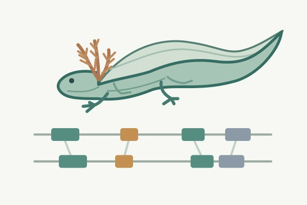

De novo design of therapeutic scFvs and multi-specific engagers from sequence alone
IASOを使い、薬剤耐性に関わるEGFR変異を識別すると予測される一本鎖抗体の候補を、配列から設計しました。

AI Systems Medicine
Takashi Fujiwara
東京科学大学 清水研究室 博士課程 / 日本学術振興会特別研究員（JSPS DC1 Fellow）
東京科学大学 AIシステム医科学分野 博士課程の藤原 嵩士と申します。
これまでに培った数理情報科学と生命科学の知識や実験技術を土台に、AI創薬とバイオインフォマティクスの研究をしています。
深層学習や大規模言語モデル（LLM）を使って抗体やペプチドなどの創薬分子を設計し、自ら実験で検証しています。計算と実験を往復しながら、新しい治療薬の候補を見つける手法を開発し、日本の科学技術の発展に貢献していきたいと思っています。
抗原配列情報に基づく治療用scFvのde novo設計基盤構築
Selected for Oral Presentation
マルチAIエージェント創薬プラットフォームOrchestRAによる創薬標的同定からリード化合物最適化までの統合的アプローチ
マルチAIエージェント創薬プラットフォームOrchestRAによる創薬標的同定からリード化合物最適化までの統合的アプローチ
潜在空間分子設計 第3回リトリート／韮崎
抗原配列情報に基づく治療用scFvのde novo設計基盤構築
潜在空間分子設計 第3回リトリート／韮崎
De novo design of therapeutic scFvs from sequence alone
CBI学会2026年大会／船堀
OrchestRA: A Multi-AI Agent Platform for Democratizing Drug Discovery
CBI学会2026年大会／船堀
Selected for Oral Presentation
抗原配列情報に基づく治療用scFvおよびT細胞エンゲージャーのde novo設計基盤構築
マルチAIエージェント創薬プラットフォームOrchestRAによる創薬プロセスの民主化
知識駆動型自律的マルチAIエージェントシステム「OrchestRA」による創薬プロセスの民主化
潜在空間の探索により新規リード化合物を自律的に設計するマルチAIエージェント創薬プラットフォームOrchestRAの開発
学術変革領域研究 (A)「天然物が織りなす化合物潜在空間が拓く生物活性分子デザイン」第4回公開シンポジウム／福岡
生体高分子潜在空間に基づく新たな生体分子設計手法の構築
学術変革領域A「潜在空間分子設計」第四回公開シンポジウム／福岡
Developing Antibody-Antigen Interaction Prediction Models for Drug Discovery Applications
International Symposium Commemorating the Certification as a University for International Research Excellence／東京
抗体-抗原相互作用予測モデルの開発と創薬への応用
言語モデルによるscFv-抗原相互作用の解読
生体高分子潜在空間に基づく新たな抗体分子設計手法の構築
学術変革領域研究 (A)「天然物が織りなす化合物潜在空間が拓く生物活性分子デザイン」第2回リトリート／鶴岡
言語モデルを用いたscFv-抗原相互作用の解読
学術変革領域研究 (A)「生体反応の集積・予知・創出を基盤としたシステム生物合成科学」第六回公開シンポジウム／福井
パーキンソン病 (PD) およびハンチントン病 (HD) に関する疾患横断的特徴量の探索手法構築
日本薬学会第144年会
CBI学会2026年大会で、治療用scFvの設計とペプチド評価基盤BindSafe-PepBenchの2演題をポスター発表しました。scFvの演題で学生発表奨励賞を受賞しました。
日本バイオインフォマティクス学会年会（相模原）のハイライトトラックで、抗原配列に基づく治療用scFvとT細胞エンゲージャーの設計について口頭発表しました。
ウーパールーパーの再生時に働く遺伝子制御配列を手がかりに、脊椎動物に共通する配列の特徴を調べた筆頭著者プレプリントをbioRxivで公開しました。
鈴木崇英さん、中西一貴さん、清水秀幸先生と執筆した「AIエージェントによる生命科学・創薬科学の革新」が『月刊BIOINDUSTRY』7月号に掲載されました。
清水研究室が第49回日本分子生物学会年会に演題を登録しました。私の演題は、抗原配列に基づく治療用scFvのde novo設計です。
標的への結合と安全性をともに評価するペプチド生成研究「Pepti-drift」を、筆頭著者としてarXivで公開しました。
共著者として参加した創薬AI「OrchestRA」の研究を、中西一貴さんが第8回日本メディカルAI学会学術集会で口頭発表しました。
福岡で開かれた「潜在空間分子設計」第4回公開シンポジウムで、生体高分子の潜在空間を使った分子設計についてポスター発表しました。
抗原配列から治療用一本鎖抗体（scFv）と多重特異性エンゲージャーを設計する筆頭著者プレプリントをbioRxivで公開しました。
創薬の標的探索から候補化合物の設計までを複数のAIエージェントで支援する「OrchestRA」のプレプリントを、鈴木崇英さん、中西一貴さんと共同筆頭著者（co-1st）としてarXivで公開しました。
日本学術振興会特別研究員（DC1・情報学）に採用内定しました。採用開始は2026年4月です。
抗体–抗原相互作用の予測に関する発表で、第48回日本分子生物学会年会のMBSJ Poster Award 2025を受賞しました。
横浜で開かれた第48回日本分子生物学会年会で、抗体–抗原相互作用予測モデルの開発と創薬への応用についてポスター発表しました。
鶴岡で開かれた「潜在空間分子設計」第2回リトリートで、生体高分子の潜在空間を使った抗体設計についてポスター発表しました。
日本科学未来館で開かれたLaboratory Automation Developers Conference 2025に参加し、参加報告を研究室サイトに寄稿しました。
言語モデルによるscFv–抗原相互作用の解析で、日本バイオインフォマティクス学会年会の優秀ポスター発表賞を受賞しました。
名古屋で開かれた日本バイオインフォマティクス学会年会で、言語モデルによるscFv–抗原相互作用の解析についてポスター発表しました。
疾患の特徴を病態の連続性から捉える研究論文が、npj Systems Biology and Applicationsに採択されました。
東京科学大学のリサーチアシスタント（RA）に採用されました。
福井で開かれた「予知生合成科学」第6回公開シンポジウムで、言語モデルを用いたscFv–抗原相互作用の解析についてポスター発表しました。
東京科学大学の清水研究室に博士課程の学生として加わりました。
IASOを使い、薬剤耐性に関わるEGFR変異を識別すると予測される一本鎖抗体の候補を、配列から設計しました。

学習に使わなかった88標的で評価したところ、生成ペプチドの18.37%が、結合と4種類の安全性の予測基準をすべて満たしました。

アホロートルの四肢再生に関わるDNAモチーフの組み合わせを、ヒトとマウスでも対応する遺伝子の近くに見いだしました。

HNF1Bを標的とした計算実験で、薬物動態の予測をもとにAIが設計し直した分子は、構造をランダムに変えた分子よりも高い経口バイオアベイラビリティを示すと予測されました。

患者データから見いだした転写因子ETS-1をヒトiPS細胞由来の神経細胞で過剰発現させると、ドーパミン受容体D1の遺伝子発現が低下しました。